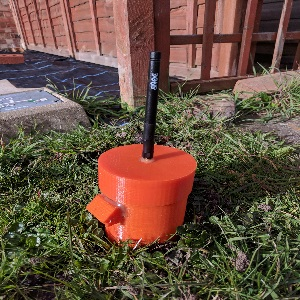
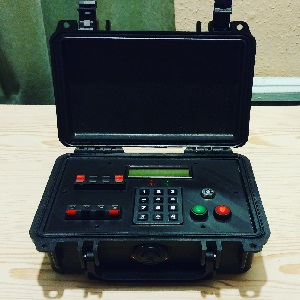
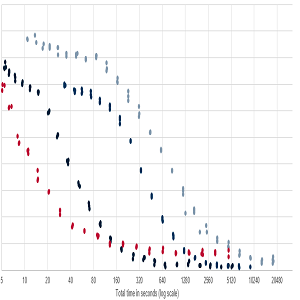
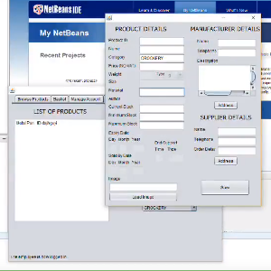
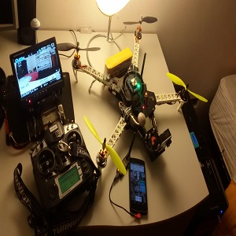
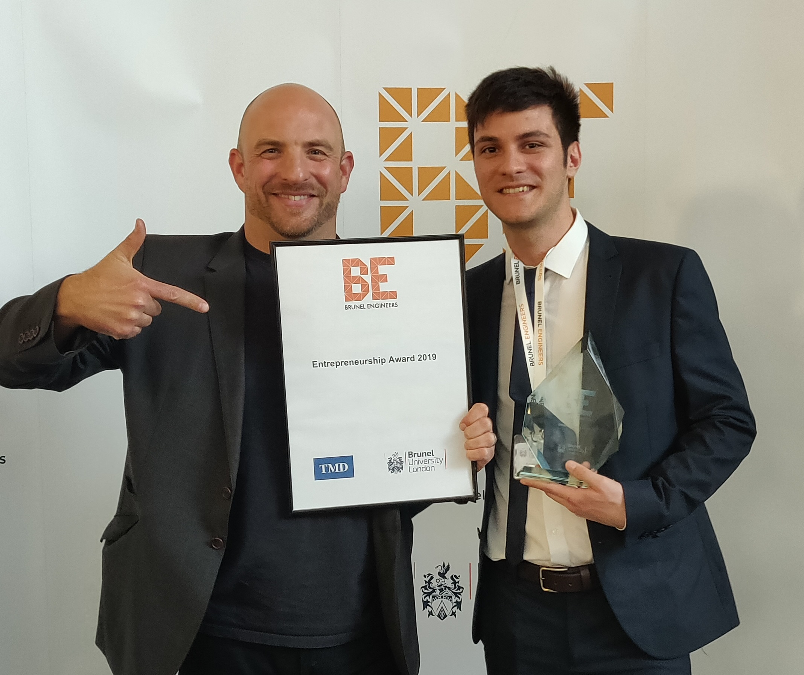

Career Profile
Software Engineer with a broad background in software and hardware development, specialising in backend web technologies. Experience in Golang, Python, C, C++, Java, Docker, SQL, Linux and more gained through industry roles, an industrial placement and personal projects. Skilled in writing efficient, maintainable code and committed to rigorous documentation standards. Passionate about solving complex challenges.
Work Experience
• Developing and maintaining new features, fixing bugs and migrating legacy PHP code
to containerised microservices written in Go.
• Orchestrating CI/CD pipelines via Jenkins, managing version control with GitHub.
• Ensuring code quality through code reviews, Unit and Functional Testing using Mockery and Gherkin.
• Enhancing application efficiency through concurrent go-routines and Docker containerisation.
• Collaborating on OKR objectives with QA and front-end engineers.
• Employing RabbitMQ for robust event handling and smooth communication between microservices.
• Participating in Agile Scrum meetings, utilising Jira for task management, and contributing to sprint planning.
• Conducting thorough code reviews to uphold coding standards, fostering continuous improvement within the development team.
• Orchestrating CI/CD pipelines via Jenkins, managing version control with GitHub.
• Ensuring code quality through code reviews, Unit and Functional Testing using Mockery and Gherkin.
• Enhancing application efficiency through concurrent go-routines and Docker containerisation.
• Collaborating on OKR objectives with QA and front-end engineers.
• Employing RabbitMQ for robust event handling and smooth communication between microservices.
• Participating in Agile Scrum meetings, utilising Jira for task management, and contributing to sprint planning.
• Conducting thorough code reviews to uphold coding standards, fostering continuous improvement within the development team.
- Golang
- PHP
- MySQL
- Elasticsearch
- Docker
- RESTful APIs
- Linux
• Web development role in an Agile team focused on backend and some front end development.
• Developing and maintaining new features, fixing bugs and migrating legacy functionality to a newer version of the framework.
• Enhancing developers onboarding by setting up documentation and writing down common procedures and how to's.
• Taking up on QA responsibilities to enhance testing by personally improving the QA test framework with Selinium.
• Orchestrating CI/CD pipelines via Jenkins, managing version control with GitHub.
• Participating in Agile Scrum meetings, utilising Jira for task management, and contributing to sprint planning.
• Developing and maintaining new features, fixing bugs and migrating legacy functionality to a newer version of the framework.
• Enhancing developers onboarding by setting up documentation and writing down common procedures and how to's.
• Taking up on QA responsibilities to enhance testing by personally improving the QA test framework with Selinium.
• Orchestrating CI/CD pipelines via Jenkins, managing version control with GitHub.
• Participating in Agile Scrum meetings, utilising Jira for task management, and contributing to sprint planning.
- Python
- Odoo
- PostgreSQL
- Javascript
- Docker
- Selenium
- Linux
• Development of an AI neural network software for embedded and mobile platforms (Linux and Android).
• Development of demos for customers and taking on requirements capture meetings with customers.
• Responsible for the development and integration of a demo on a Qualcomm experimental device by developing a custom version of the Android operating system and a custom Android demo app.
• Pre and post sale customer support for integration on their platform solutions.
• Looked after AWS infrastructure maintenance and GDPR compliance.
• Development of demos for customers and taking on requirements capture meetings with customers.
• Responsible for the development and integration of a demo on a Qualcomm experimental device by developing a custom version of the Android operating system and a custom Android demo app.
• Pre and post sale customer support for integration on their platform solutions.
• Looked after AWS infrastructure maintenance and GDPR compliance.
- C/C++
- Java
- Python
- AWS
- Flask
- PostgreSQL
- Linux
- Android
• Intel sponsored projects, worked within a small team, with focus on the research and development of an intelligent algorithm for Transportation Network optimisation.
• Presented project results in Arizona at Intel facility.
• Extensive use of C++, C, C#, OpenCL and CUDA languages.
• Presented a on meetings to the client regarding current development strategies and results.
• Extensive research of optimisation techniques and hardware parallelism strategies on FPGA.
• Presented project results in Arizona at Intel facility.
• Extensive use of C++, C, C#, OpenCL and CUDA languages.
• Presented a on meetings to the client regarding current development strategies and results.
• Extensive research of optimisation techniques and hardware parallelism strategies on FPGA.
- C/C++
- C#
- Java
- Cuda
- OpenCL
• Responbile for customer service and promotion of products.
• Managing e-mails and phone calls with suppliers.
• Delivery of products to customer’s home.
• Cashier and stock controller
• Managing e-mails and phone calls with suppliers.
• Delivery of products to customer’s home.
• Cashier and stock controller
Skills
- Golang
- Python
- Java
- PHP
- SQL
- Docker
- ElasticSearch
- RabbitMQ
- AWS
- Git
- Linux
- HTML
- CSS
- Javascript
- AI
- C
- C++
- C#
- Android Apps
- IoT
Recent Projects
Audio Analytic - Qualcomm Sensing Hub Low Power Integration
Solely responsible for the integration of Audio Analytic's ai3-nano™ software on Qualcomm Snapdragon 888 5G SoC. Development of a custom version of Android OS and an Android app to showcase Audio Analytics software on Qualcomm's chipset. For the More information can be found on Audio Analytic's web page.
Solely responsible for the integration of Audio Analytic's ai3-nano™ software on Qualcomm Snapdragon 888 5G SoC. Development of a custom version of Android OS and an Android app to showcase Audio Analytics software on Qualcomm's chipset. For the More information can be found on Audio Analytic's web page.
- C
- Android
- Java
- Linux
- DSP
- Embedded

Dissertation Project - IoT Soil Monitoring System
(View Project - View Reuters Article - View University Article)
• A power efficient and wireless array of sensor nodes for the monitoring of an agricultural field.
• Implemented a cloud platform for storage and visualization of the data.
• Implemented Neural Network Virtual Sensing approach for forecasting of soil temperatures.
• Achieved 12 months of battery life at 1h samplying frequency.
• Implemented an Android application for the visualisation and management of the nodes.
• Designed a PCB and a 3D enclosure.
(View Project - View Reuters Article - View University Article)
• A power efficient and wireless array of sensor nodes for the monitoring of an agricultural field.
• Implemented a cloud platform for storage and visualization of the data.
• Implemented Neural Network Virtual Sensing approach for forecasting of soil temperatures.
• Achieved 12 months of battery life at 1h samplying frequency.
• Implemented an Android application for the visualisation and management of the nodes.
• Designed a PCB and a 3D enclosure.
- HTML
- Javascript
- CSS
- PHP
- SQL
- C
- Java
- Python
- Android
- AI
- Atmel
- IoT
- PCB

Personal Project - Design of an Airsoft Prop (View Project)
• Personal project based on the design and production of an Airsoft device to enrich gameplay.
• Self-taught: microcontrollers, Proteus 8 simulation, PCB design, 3D printing and modelling.
• Developed a wordpress website for the advertising and selling of the product.
• Sold 10 copies and explored how to balance features vs cost based on market research and feedback.
• Personal project based on the design and production of an Airsoft device to enrich gameplay.
• Self-taught: microcontrollers, Proteus 8 simulation, PCB design, 3D printing and modelling.
• Developed a wordpress website for the advertising and selling of the product.
• Sold 10 copies and explored how to balance features vs cost based on market research and feedback.
- C
- PicMicro
- Wordpress
- Software/Hardware Design
- 3D Printing
- Marketing
- Entrepreneur

Assistant Researcher - Evolutionary Strategy (ES) Novel Implementation
• Project focused on the development of an ES algorithm to replace Ant Colony Optimisation (ACO) in C++ for Transportation Network Optimization.
• Managed to develop a novel implementation of ES that performed faster than ACO thanks to the use of massive multithreading and better combinatorial exploration.
• Novel ES implementation demonstrated better objective results that ACO did not prove to achieve yet.
• Project focused on the development of an ES algorithm to replace Ant Colony Optimisation (ACO) in C++ for Transportation Network Optimization.
• Managed to develop a novel implementation of ES that performed faster than ACO thanks to the use of massive multithreading and better combinatorial exploration.
• Novel ES implementation demonstrated better objective results that ACO did not prove to achieve yet.
- C++
- Optimisation Algorithms
- Multi Threading

Assistant Researcher - FPGA ACO Parallel OpenCL Implementation
• Project focused on the adaptation of an ES algorithm for implementation on FPGA.
• Managed to develop a novel implementation of ES for FPGA that formed the basis for further research and development.
• Project focused on the adaptation of an ES algorithm for implementation on FPGA.
• Managed to develop a novel implementation of ES for FPGA that formed the basis for further research and development.
- C++
- FPGA
- Optimisation Algorithms

Assistant Researcher - Visualization of Complex Data Problem
• Desktop Java application for the visualisation of complex data relationships.
• Focused on the visualization complex scheduling task solutions produced by an optimisation algorithm.
• Successfully developed an effective interactive visualization strategy that could analyse, compare different solutions and provide key analysis information for the developer and the user.
• Desktop Java application for the visualisation of complex data relationships.
• Focused on the visualization complex scheduling task solutions produced by an optimisation algorithm.
• Successfully developed an effective interactive visualization strategy that could analyse, compare different solutions and provide key analysis information for the developer and the user.
- Java
- Visualisation
- Graph Theory

Brunel University - Banking and Supermarket Software (Watch Video)
• Design and implementation of a banking and supermarket software in Java for the purpose
of managing accounts and buying products using a bank account from the banking software.
• Communication between the two software by means of a TCP socket.
• Successfully learned and reinforced OOP principles, Java Generics, Factory Templates and others.
• Design and implementation of a banking and supermarket software in Java for the purpose
of managing accounts and buying products using a bank account from the banking software.
• Communication between the two software by means of a TCP socket.
• Successfully learned and reinforced OOP principles, Java Generics, Factory Templates and others.
- Java
- Java Generics
- Java Factory Templates

Brunel University - Measuring Bicycling Performances
• A group project focused on the development of a device for the measure of the speed, inclination, gear ratio and pressure exerted on the pedals of a bicycle.
• Successfully collaborated with the team by helping with the development of the sensors and the software for the PicMicrocontroller in C, a Java app for the computer and an Android app for the streaming and control of the data.
• Project exhibited at Brunel Engineers Showcase 2017.
• Cloud capabilities implemented using Power BI Cloud.
• A group project focused on the development of a device for the measure of the speed, inclination, gear ratio and pressure exerted on the pedals of a bicycle.
• Successfully collaborated with the team by helping with the development of the sensors and the software for the PicMicrocontroller in C, a Java app for the computer and an Android app for the streaming and control of the data.
• Project exhibited at Brunel Engineers Showcase 2017.
• Cloud capabilities implemented using Power BI Cloud.
- C
- Java
- Software/Hardware Design
- PicMicro
- PowerBI
- Android App

Personal Project - Design of a QuadCopter
• Personal project based on the design and implementation of a quadcopter for video recording and aerobatic flight.
• Achieved 30 minutes of flight with a stable motor response.
• Quadcopter controlled and monitored via Android app.
• Video feed streamed on a remote display and also camera recorded.
• Inspired me to learn more about electronics, embedded hardware and motor control.
• Personal project based on the design and implementation of a quadcopter for video recording and aerobatic flight.
• Achieved 30 minutes of flight with a stable motor response.
• Quadcopter controlled and monitored via Android app.
• Video feed streamed on a remote display and also camera recorded.
• Inspired me to learn more about electronics, embedded hardware and motor control.
Awards

Brunel Engineers Entrepreneurship Award 2019
Award given during Brunel Engineers Showcase 2019 where the best engineering projects developed that year were displayed. My final year dissertation project (IoT Soil Monitoring System) was selected to be presented at the show and it was awarded by a guest from the industry (TMD group) because the project was deemed to have an outstanding business potential with prospects of creating wealth or growth on an individual group or at a societal level.
Award given during Brunel Engineers Showcase 2019 where the best engineering projects developed that year were displayed. My final year dissertation project (IoT Soil Monitoring System) was selected to be presented at the show and it was awarded by a guest from the industry (TMD group) because the project was deemed to have an outstanding business potential with prospects of creating wealth or growth on an individual group or at a societal level.